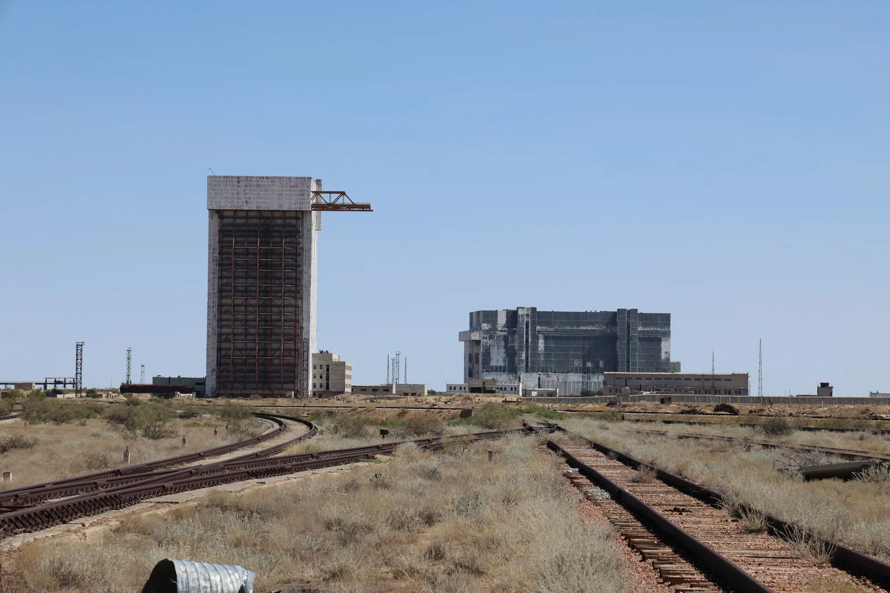
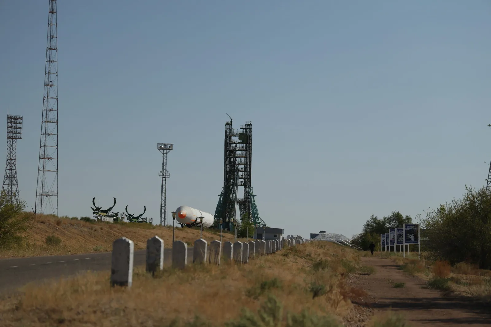
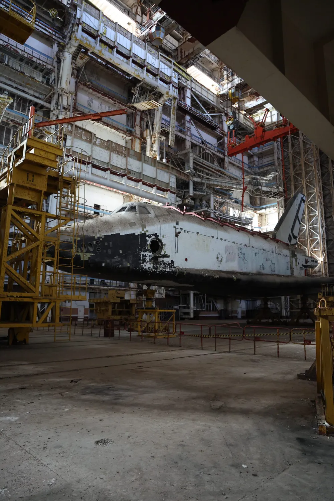
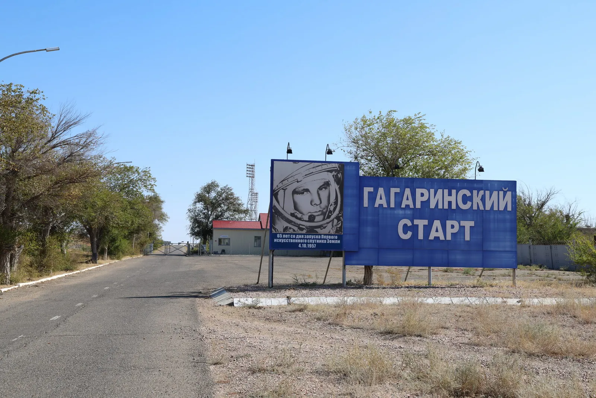
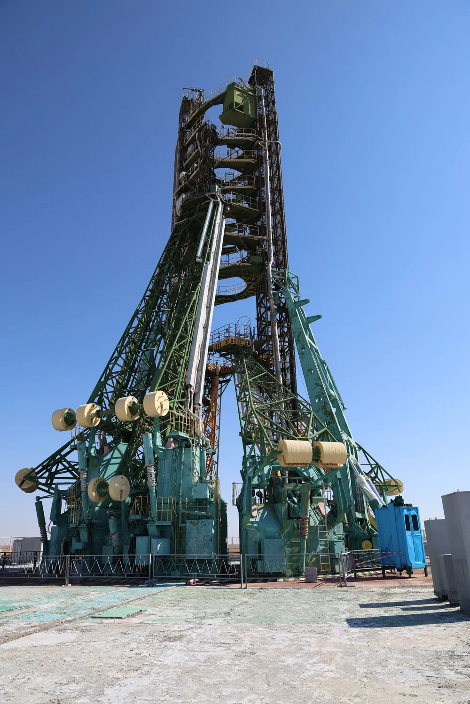
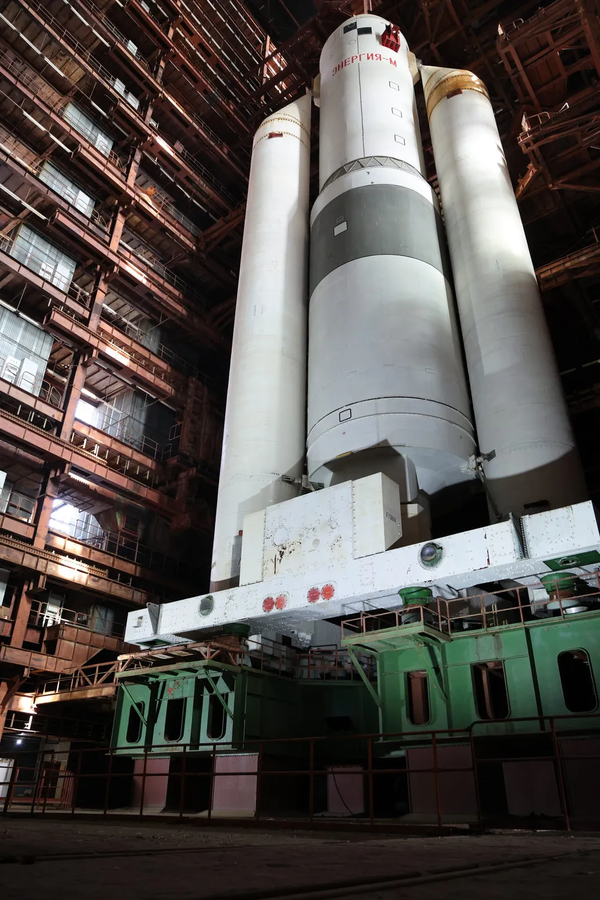

Сохранность объектов «Байконур»
Обеспечение сохранности и рационального использования объектов комплекса «Байконур», не вошедших в состав и исключаемых из аренды Российской Федерации.
Республиканское государственное предприятие Аэрокосмического комитета РК
Инфраструктура, экология и живая история космодрома Байконур: первой космической гавани планеты, которой 70 лет

О предприятии
РГП на ПХВ «Инфракос» создано постановлением Правительства Республики Казахстан от 8 января 1996 года № 27 на базе имущества объектов комплекса «Байконур», не вошедших в состав арендуемых Российской Федерацией. Предприятие действует при Аэрокосмическом комитете Министерства цифрового развития, инноваций и аэрокосмической промышленности РК.
Миссия предприятия: сохранность и рациональное использование объектов комплекса «Байконур», не вошедших в состав и исключаемых из состава арендуемых Российской Федерацией, природоохранные мероприятия на этих объектах, а также оценка, прогнозирование и снижение негативного воздействия ракетно-космической деятельности на окружающую среду и здоровье населения Казахстана.
Постановлением Правительства РК от 6 мая 2021 года № 295 к предприятию присоединён научно-исследовательский центр «Ғарыш-Экология»: сегодня «Инфракос» ведёт и научную работу по экологической безопасности ракетно-космической деятельности, с филиалом в Алматы, представительствами в Астане и Жезказгане и химико-экологической лабораторией в Байконыре.
Направления деятельности
Обеспечение сохранности и рационального использования объектов комплекса «Байконур», не вошедших в состав и исключаемых из аренды Российской Федерации.
Экологическая защита на объектах космодрома: природоохранные мероприятия, научно-исследовательские программы экологической безопасности, экосопровождение пусков ракет-носителей.
Оценка, прогнозирование и снижение негативного воздействия космической деятельности на окружающую среду и здоровье населения Республики Казахстан.
Переработка отходов от утилизации неиспользуемых объектов комплекса: система из 8 карьеров-полигонов, 258 963 м³ переработано за счёт собственных средств предприятия.
Экология и мониторинг
Химико-экологическая лаборатория, передвижные комплексы и полевые экспедиции: предприятие непрерывно следит, как ракетно-космическая деятельность влияет на степь, воздух, воду и людей.
Совместное экологическое сопровождение пусков ракет-носителей «Протон» и «Союз» с космодрома Байконур: отбор проб до и после старта.
Инструментальные измерения приземного слоя атмосферы, почвы и воды в местах падения ступеней, анализ на газовом хроматографе с масс-спектрометром.
Динамическое наблюдение за средой обитания и здоровьем жителей территорий, подверженных воздействию космической деятельности: осмотры, опросы, оценка рисков.
Участие в ликвидации последствий аварийных падений ракет космического назначения и оценка степени воздействия на объекты окружающей среды.
Республиканская бюджетная программа 131 «Базовое финансирование научной и научно-технической деятельности»: освоение 100%
Республиканская бюджетная программа 010 «Услуги экологического мониторинга территорий РК, подверженных воздействию ракетно-космической деятельности комплекса Байконур»: освоение 100%
Совместное экологическое сопровождение пусков ракет-носителей «Протон» и «Союз» с космодрома Байконур (по договорам с АО «ЦЭНКИ»)
Оценка степени негативного воздействия аварии РН «Союз-ФГ» с ТПК «Союз МС-10» на окружающую среду и населённые пункты, ежегодная оценка РП120А, экологические паспорта (АО «ЦЭНКИ», АО СП «Байтерек», НПО Машиностроения)

«Инфракос» выполняет республиканскую бюджетную программу экологического мониторинга территорий Казахстана, подверженных воздействию ракетно-космической деятельности комплекса «Байконур».
Мониторинг воздействия
Каждый пуск с Байконура сопровождается полевыми работами: специалисты предприятия выезжают на места падения ступеней, берут пробы и наблюдают за здоровьем жителей прилегающих территорий.
Измерения приземного слоя атмосферного воздуха на местах падения первых ступеней и боковых блоков РН «Союз» и «Протон-М», а также в населённых пунктах по трассам пусков.
Совместный отбор проб почвы в местах падения ступеней, включая обследование мест аварийных падений: опыт работ на месте аварии РН «Протон-М» 2013 года и РН «Союз-ФГ» 2018 года.
Химико-экологическая лаборатория в Байконыре выполняет анализ проб на газовом хроматографе с масс-спектрометром. Передвижная лаборатория на базе автомобиля КамАЗ работает прямо в полях.
Опросы по состоянию здоровья и медицинские осмотры жителей, в том числе выездные осмотры в Улытауском районе: динамическое наблюдение за средой обитания и людьми.
Оценка, прогнозирование и разработка рекомендаций по снижению негативного воздействия ракетно-космической деятельности на окружающую среду и здоровье населения Республики Казахстан.
Разработка нормативно-технических и нормативно-методических документов экологической безопасности, создание тематических картографических материалов по территориям воздействия.
Утилизация строительных отходов
В рамках Решения о порядке обращения с отходами, образующимися при утилизации неиспользуемых Российской Федерацией объектов комплекса «Байконур», предприятие обеспечивает сортировку и переработку строительных материалов. Работы ведутся собственными силами и за счёт собственных средств.
| № | Наименование объекта | Вместимость полигона, м³ | Заполняемость |
|---|---|---|---|
| 1 | Карьер в районе ст. Братская | 68 958 | 100% |
| 2 | Карьер в районе пл. 31 (север) | 44 840 | 100% |
| 3 | Карьер в районе пл. 31 (запад) | 22 057 | 5% |
| 4 | Карьер в районе пл. 92А | 31 817 | 100% |
| 5 | Карьер в районе пл. 93 | 26 971 | 100% |
| 6 | Карьер в районе пл. 250А | 12 471 | 100% |
| 7 | Карьер в районе пл. 200 | 33 178 | 100% |
| 8 | Карьер в районе пл. 3К | 39 625 | 100% |
Следующий этап: обеспечение заполняемости карьеров в районе площадок 191 и 42 и завершение работ по утилизации объектов за счёт средств предприятия.
Реализованные проекты
Реализация совместного Решения сопредседателей Казахстанско-Российской межправительственной комиссии от 8 ноября 2017 года: из 317 объектов, подлежащих утилизации, 177 объектов утилизированы за счёт средств Российской Федерации по договорам с АО «ЦЭНКИ» на сумму 1,8 млрд тенге, 140 объектов утилизируются за счёт средств РГП «Инфракос» (исполнение 84,3% на сумму 1,5 млрд тенге).
Предприятию предоставлено право реализации элементов разрушенных зданий, узлов и деталей списанной техники, металлолома от отработавшей ракетной техники. С октября 2018 года все торги проводятся электронно на веб-портале реестра государственного имущества, с апреля 2022 года также на торговых площадках товарных бирж. В 2022 году заключены договоры купли-продажи материалов I и II группы на сумму 415,85 млн тенге.
Экономия бюджетных средств (полная стоимость утилизации объектов 2018-2020 годов составила бы порядка 3,6 млрд тенге), очистка территории комплекса от аварийных объектов, угрожающих жизни и экологии, положительный экономический и социальный эффект для предприятия и региона.
Среди задач развития: регламентирование и цифровизация бизнес-процессов по сохранности государственного имущества с видеонаблюдением в зонах рисков, принятие имущества НКИ КРК «Зенит-М» на площадках 42, 43, 45, увеличение объёмов реализации материалов через электронные тендеры, повышение заработной платы работников. Структура активов предприятия: здания и сооружения, транспорт, машины и оборудование.
Структура предприятия
Центральный аппарат предприятия работает в городе Байконыр, научно-экологическое крыло представлено филиалом и представительствами в трёх регионах Казахстана.
Руководство предприятия, комплаенс-служба и отделы: управление сохранностью объектов, утилизацией, реализацией имущества, кадровая и финансовая службы. Адрес: ул. Мира, 13А.
Научно-исследовательская деятельность в области экологической безопасности ракетно-космической деятельности, выполнение республиканских бюджетных программ.
Взаимодействие с Аэрокосмическим комитетом МЦРИАП РК и центральными государственными органами.
Работа на территориях, прилегающих к районам падения отделяющихся частей ракет-носителей, включая Улытауский район.
Стационарная лаборатория в г. Байконыр с газовым хроматографом и масс-спектрометром и передвижная лаборатория на базе автомобиля КамАЗ.
Аэрокосмический комитет МЦРИАП РК, Казахстанско-Российская межправительственная комиссия по комплексу «Байконур», АО «ЦЭНКИ», АО СП «Байтерек», РГУ «Байконырбаланс».
Экскурсии по космодрому
Отсюда стартовали первый спутник и Юрий Гагарин. Мы открываем двери легендарных площадок Байконура: вы посетите музей космодрома, Гагаринский стартовый комплекс, увидите корабль «Буран», рабочие места подготовки ракет «Союз» и космических кораблей, их стартовые комплексы. Ближайшая стартовая площадка №1 находится всего в 38 км от города.

Советский орбитальный корабль в монтажном корпусе: кадр, ради которого едут через полмира

Стартовый комплекс, с которого 12 апреля 1961 года ушёл в небо корабль «Восток»

Рабочие места подготовки ракет и космических кораблей, стартовые сооружения

Музей Байконура и монтажно-испытательные корпуса: 70 лет космической эры в экспонатах
История космодрома
«Где найдёшь ещё такой благодатный уголок для будущих космических пусков, где свыше 300 дней в году лазурно-ясное небо, а ночью из глубины Вселенной на тебя смотрят мириады звёзд?» - так Сергей Королёв отвечал скептикам, впервые увидевшим выжженную степь будущего космодрома.
Совместное постановление о строительстве Научно-исследовательского испытательного полигона: начало грандиозных работ по освоению космического пространства. Место дислокации: район станции Тюра-Там, 2500 км от Москвы.
Утверждена организационно-штатная структура полигона. 2 июня отмечается как день образования космодрома Байконур и день рождения города. Для первой стартовой площадки военные строители вырыли котлован глубиной 45 метров, подняли более 1 млн кубометров грунта и уложили свыше 30 тысяч кубометров бетона: всё за 4 месяца.
На полигоне испытана межконтинентальная баллистическая ракета Р-7 конструкции С.П. Королёва: ракета, которая откроет человечеству дорогу в космос.
Ракетой Р-7 с площадки №1 выведен на орбиту первый в мире искусственный спутник Земли. Началась космическая эра человечества.
Боевой расчёт полигона подготовил и провёл запуск космического корабля «Восток» с первым космонавтом Земли Юрием Гагариным на борту. Площадка №1 навсегда стала Гагаринским стартом.
Первый пуск ракеты-носителя «Энергия», самой мощной из советских ракет: стартовая масса 2400 тонн, более 100 тонн полезной нагрузки на орбиту.
С площадки №110 стартовала «Энергия» с орбитальным кораблём «Буран». Впервые в мире совершена автоматическая посадка многоразового корабля: 205 минут полёта, два витка вокруг Земли, посадка без экипажа на полосу аэродрома «Юбилейный».
Юбилейный пуск с экипажем, в составе которого казахстанский космонавт Айдын Аимбетов. Четыре звезды на ферме обслуживания отмечают главные события площадки №1.
Легендарная площадка №1 передана Республике Казахстан. Космодрому Байконур, первой космической гавани Вселенной, исполнилось 70 лет. За эти годы здесь испытаны ракеты «Спутник», «Восток», «Восход», «Молния», «Союз», «Циклон», «Протон», Н1, «Зенит», «Энергия» и другие.
Маршрут экскурсии
Космодром протянулся по степи тремя флангами: левым, центральным и правым. Дорога от города уже сама по себе экскурсия: станция Тюра-Там, измерительные комплексы, кислородно-азотный завод. Ниже полная программа по объектам.
Место, с которого всё началось: сюда 12 января 1955 года прибыл первый отряд военных строителей. Сегодня это посёлок на 15 тысяч жителей, через который на космодром поступают части ракет, космические аппараты и топливо. В переводе с казахского Тюра-Там означает «священное место».
Центр космической связи на горе Мургудук: две огромные чаши антенн видны за десятки километров. Создан для управления межпланетными аппаратами и пилотируемыми кораблями. Именно здесь расположен пульт системы аварийного спасения, которая в 1983 году за секунды до взрыва ракеты спасла космонавтов Титова и Стрекалова.
В своё время самый мощный в мире: первая капля жидкого кислорода получена 12 мая 1958 года, производительность достигала 40 тонн в сутки. Завод обеспечивал все запуски космических аппаратов до 1996 года; кислород байконурского завода сертифицирован даже для медицины.
Стратегическое хранилище воды внутри холма, уникальный подземный водозабор «Левобережный» на 100 тысяч кубометров в сутки и 1030 км водоводных сетей между площадками: целая отрасль, созданная ради пусков в пустыне.
Построена в середине 60-х по инициативе академика Бармина для гражданских специалистов: на развилке дорог, соединяющей фланги космодрома.
Подлинные документы и образцы космической техники, сувениры международных экипажей и рассказы опытных экскурсоводов. Рядом: домики, где жил С.П. Королёв и где проводили ночь перед стартом первые экипажи, включая Юрия Гагарина.
«Здесь гением советского человека начался дерзновенный штурм космоса»: отсюда запущены первый спутник и первый космонавт планеты. Шестиэтажное стартовое сооружение, упрятанное под землю, газоход глубиной 40 метров, ажурные фермы, на которые «подвешивается» ракета. Около 519 пусков за историю площадки. В 2025 году Гагаринский старт передан Республике Казахстан.
Монтажно-испытательный корпус, где готовились первые ракеты и космические объекты, включая гагаринский «Восток»: здесь проходит сборка и испытания ракет в горизонтальном положении.
Центральный измерительный пункт космодрома рядом с Гагаринским стартом: приём телеметрии с борта ракет, радиосвязь с космонавтами, наблюдательные пункты для гостей. Обеспечивал запуск первого спутника, полёт Гагарина, программы «Союз-Аполлон» и «Буран».
Комплексы универсальной ракетно-космической системы растянулись вдоль дороги более чем на 15 км: стартовый комплекс площадки №110, универсальный комплекс стенд-старт (пл. 250), монтажно-заправочный корпус, стенд динамических испытаний и 90-метровое самое высокое здание космодрома.
Посадочный комплекс «Бурана» с уникальной взлётно-посадочной полосой: 4,5 км длины, 84 метра ширины, отклонение от горизонтали не более 3 мм на 3 метра. Именно сюда 15 ноября 1988 года в автоматическом режиме сел «Буран».
Одна из самых знаменитых ракет: тяжёлый носитель длиной 44,3 метра с тягой у Земли 900 тонн, выводящий на орбиту свыше 22 тонн полезной нагрузки. Два старта, четыре пусковые установки, монтажно-испытательные корпуса и заправочно-нейтрализационная станция.
Самый известный среди зарубежных партнёров монтажно-испытательный корпус: зал 100 на 33 метра с «горным» воздухом, автоматическим управлением чистотой и температурой, где собираются «Протоны» и космические головные части.
Старт ракеты «Циклон» на базе МБР Р-36 со стопроцентной автоматизацией предстартовой подготовки (все 111 пусков с Байконура успешны), шахтные пусковые установки ракет лёгкого класса «Рокот» и «Стрела» на базе МБР УР-100НУ.
Второй комплекс для легендарной «семёрки», аналогичный Гагаринскому старту, в строю с 1960 года. С октября 2019 года все запуски ракет «Союз», включая пилотируемые, выполняются с этой площадки.
Первый в мире комплекс, где полностью исключены ручные операции при подготовке ракеты: новую ракету можно пустить уже через 5 часов после предыдущей с той же пусковой установки. Площадка передана Казахстану для проекта «Байтерек».
Пусковая шахта, построенная для боевых ракет Р-36 и переоборудованная под космические запуски: ракету выталкивает из шахты газогенератор, и двигатели включаются уже в воздухе на высоте 20 метров.
Вечный огонь на месте катастрофы 24 октября 1960 года: память о ракетчиках, погибших при испытании ракеты Р-16. Весь личный состав боевого расчёта награждён орденом Мужества.
Программа экскурсии согласовывается индивидуально: состав объектов зависит от дат, режима космодрома и графика пусков.
Оставить заявку на экскурсиюОткрытость
Устав, лицензия, финансовые отчёты, нормативные акты и материалы по государственным закупкам предоставляются по официальному запросу. Торги по реализации списанного имущества с октября 2018 года проводятся в форме электронного тендера на веб-портале реестра государственного имущества, с апреля 2022 года также на электронных торговых площадках товарных бирж. По всем вопросам обращайтесь в приёмную предприятия.
Контакты
По вопросам экскурсий, сотрудничества, реализации имущества и обращениям граждан.